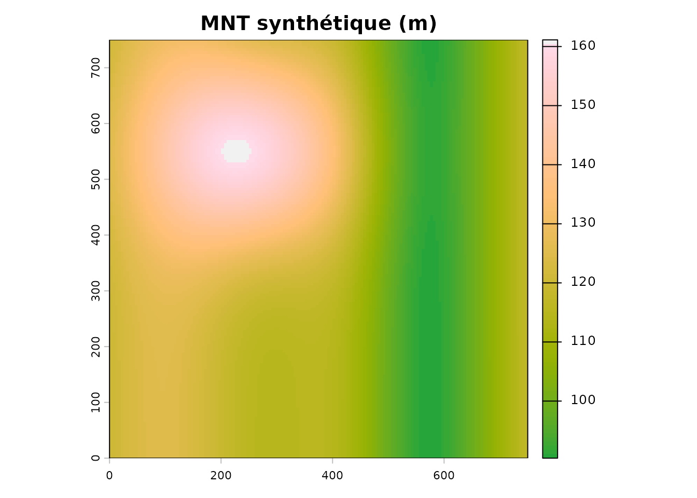
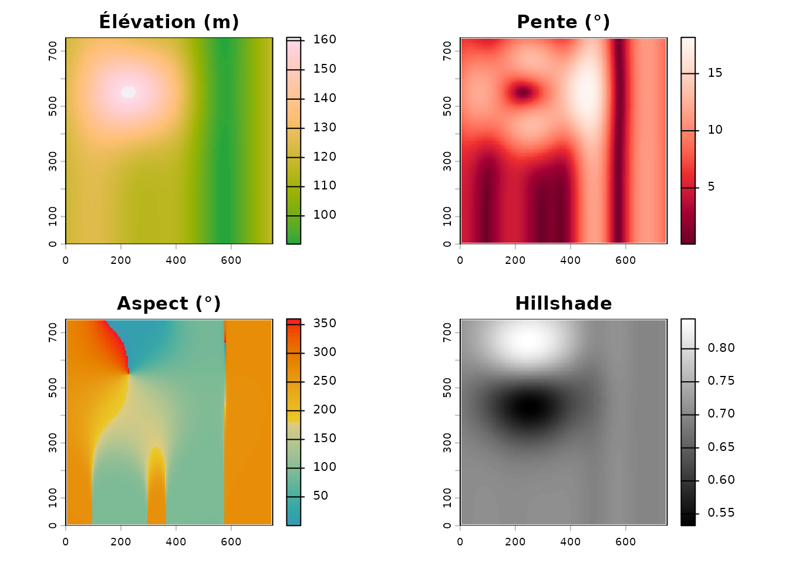
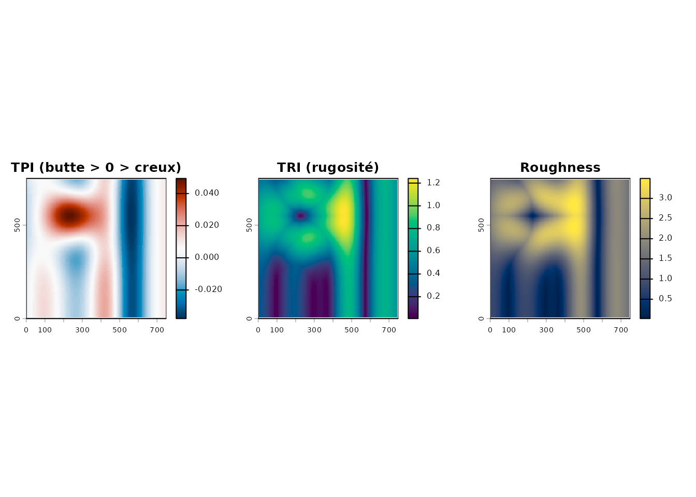
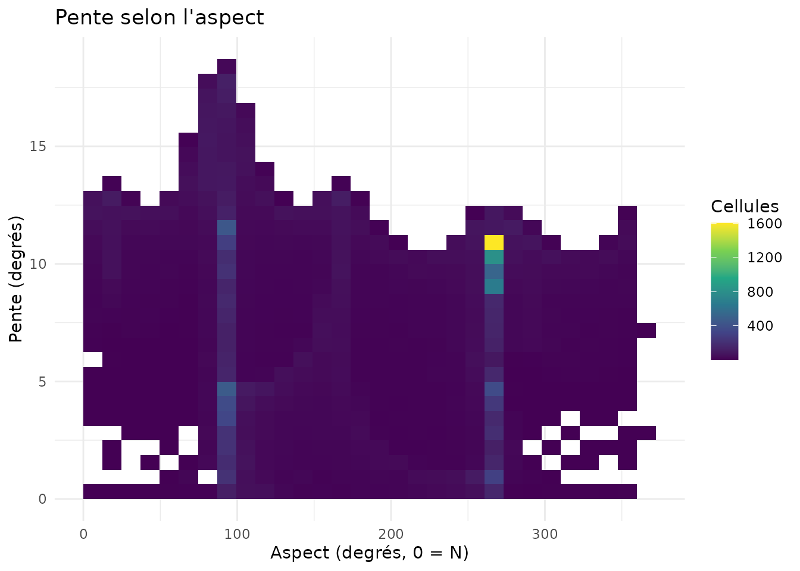
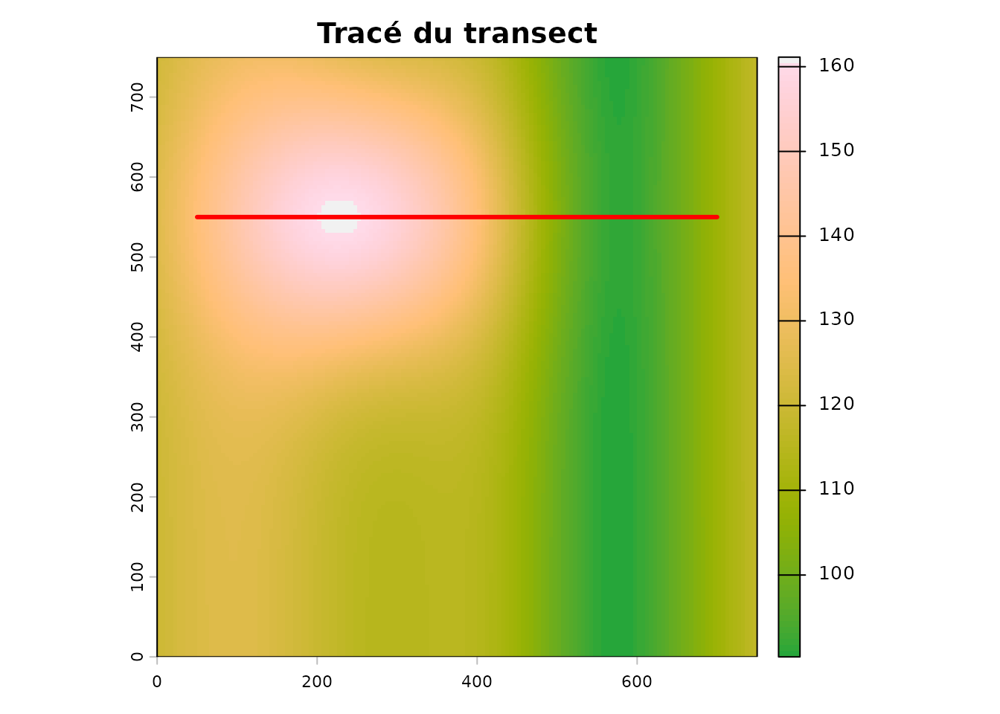
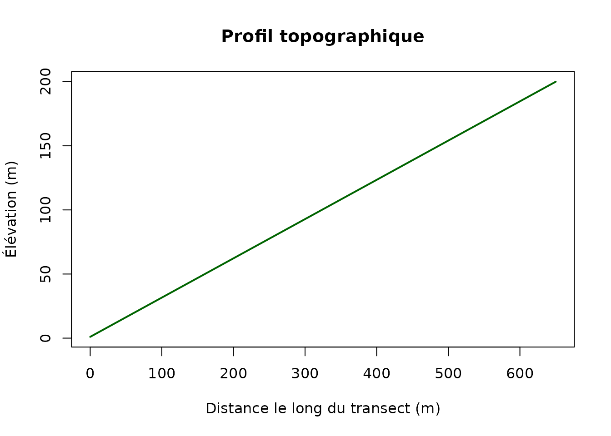

Du relief aux indices dérivés
L’article Démarrage : covariables terrain présente les briques de base (pente, aspect, hillshade, géomorphons). Ici, on va plus loin : on dérive des indices de forme et on lit le relief le long de transects, avec une lecture agronomique.
On fabrique un paysage synthétique : une colline et un talweg.
set.seed(2)
mnt <- terra::rast(nrows = 150, ncols = 150,
xmin = 0, xmax = 750, ymin = 0, ymax = 750,
crs = "EPSG:32618")
xy <- terra::xyFromCell(mnt, 1:terra::ncell(mnt))
colline <- 45 * exp(-((xy[, 1] - 250)^2 + (xy[, 2] - 550)^2) / (2 * 120^2))
talweg <- -30 * exp(-((xy[, 1] - 550)^2) / (2 * 90^2))
terra::values(mnt) <- 120 + colline + talweg + 5 * sin(xy[, 1] / 60)
names(mnt) <- "elevation"
terra::plot(mnt, col = hcl.colors(100, "Terrain"), main = "MNT synthétique (m)")
Les dérivées de base
pente <- calculer_pente(mnt)
aspect <- calculer_aspect(mnt)
hs <- terra::shade(pente * pi / 180, aspect * pi / 180)
par(mfrow = c(2, 2), mar = c(2, 2, 3, 2))
terra::plot(mnt, col = hcl.colors(100, "Terrain"), main = "Élévation (m)")
terra::plot(pente, col = hcl.colors(100, "Reds"), main = "Pente (°)")
terra::plot(aspect, col = hcl.colors(100, "Zissou"), main = "Aspect (°)")
terra::plot(hs, col = grey(0:100 / 100), main = "Hillshade")
Indices de forme
terra::terrain() fournit des indices locaux
complémentaires :
- TPI (Topographic Position Index) : position relative au voisinage (positif = butte, négatif = creux).
- TRI (Terrain Ruggedness Index) : rugosité locale.
- Roughness : amplitude locale du relief.
tpi <- terra::terrain(mnt, v = "TPI", neighbors = 8)
tri <- terra::terrain(mnt, v = "TRI", neighbors = 8)
rough <- terra::terrain(mnt, v = "roughness", neighbors = 8)
par(mfrow = c(1, 3), mar = c(2, 2, 3, 2))
terra::plot(tpi, col = hcl.colors(100, "RdBu", rev = TRUE),
main = "TPI (butte > 0 > creux)")
terra::plot(tri, col = hcl.colors(100, "Viridis"), main = "TRI (rugosité)")
terra::plot(rough, col = hcl.colors(100, "Cividis"), main = "Roughness")
Relation pente × aspect
Croiser pente et aspect aide à repérer les versants raides exposés (par ex. sud = plus chaud, ouest = plus venté).
df <- data.frame(pente = terra::values(pente), aspect = terra::values(aspect))
df <- df[stats::complete.cases(df), ]
ggplot2::ggplot(df, ggplot2::aes(aspect, pente)) +
ggplot2::geom_bin2d(bins = 30) +
ggplot2::scale_fill_viridis_c(name = "Cellules") +
ggplot2::labs(title = "Pente selon l'aspect",
x = "Aspect (degrés, 0 = N)", y = "Pente (degrés)") +
ggplot2::theme_minimal()
Profil topographique (transect)
ligne <- st_sf(geometry = st_sfc(
st_linestring(matrix(c(50, 550, 700, 550), ncol = 2, byrow = TRUE)),
crs = 32618))
# Échantillon de points le long du transect (ligne horizontale y = 550)
xs <- seq(50, 700, length.out = 200)
pts <- st_as_sf(data.frame(x = xs, y = 550), coords = c("x", "y"), crs = 32618)
elev <- terra::extract(mnt, terra::vect(pts))[, 1]
terra::plot(mnt, col = hcl.colors(100, "Terrain"), main = "Tracé du transect")
plot(st_geometry(ligne), add = TRUE, col = "red", lwd = 3)
plot(xs - 50, elev, type = "l", lwd = 2, col = "darkgreen",
xlab = "Distance le long du transect (m)", ylab = "Élévation (m)",
main = "Profil topographique")
Lecture agronomique
| Indice | Interprétation |
|---|---|
| Pente forte | drainage rapide, risque d’érosion, travail du sol difficile |
| TPI négatif | bas de pente / dépression : accumulation d’eau |
| TPI positif | butte / crête : plus sec, exposé au vent |
| Aspect sud | sol plus chaud, dégel printanier plus précoce |
| Aspect nord | sol plus frais, gel tardif, humidité persistante |
| TRI élevé | micro-relief accidenté, préparation du lit de semence difficile |
Ces indices se combinent aux autres modules du package (ombrage, vent, pédologie) pour décrire finement chaque parcelle.
À retenir
-
calculer_pente()/calculer_aspect(): les dérivées de base. -
terra::terrain(): TPI, TRI, roughness pour la forme locale. - Les transects relient le relief à des observations de terrain.